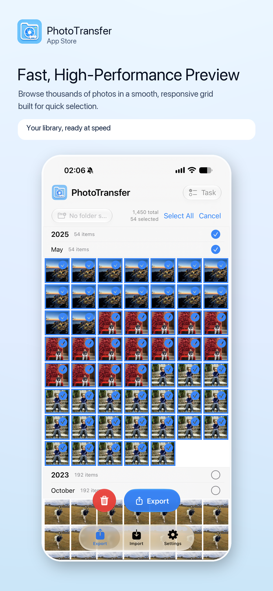
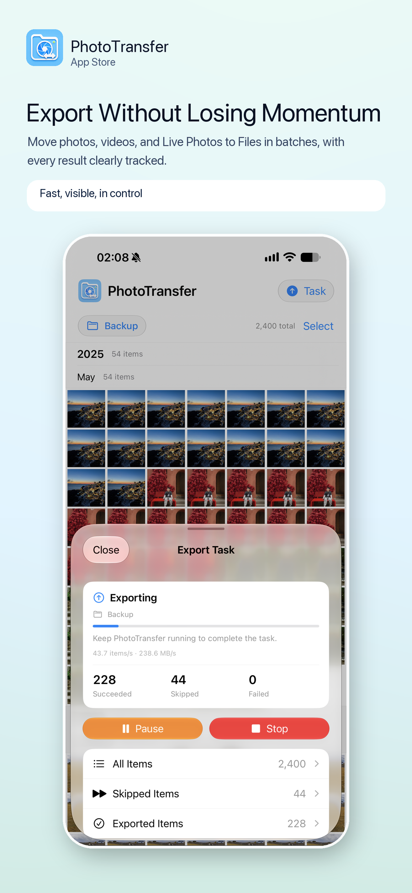
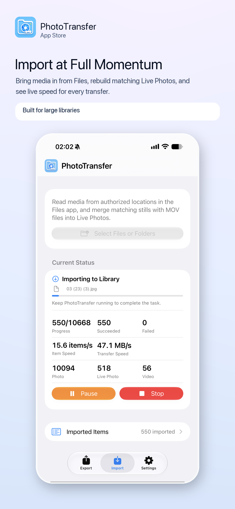
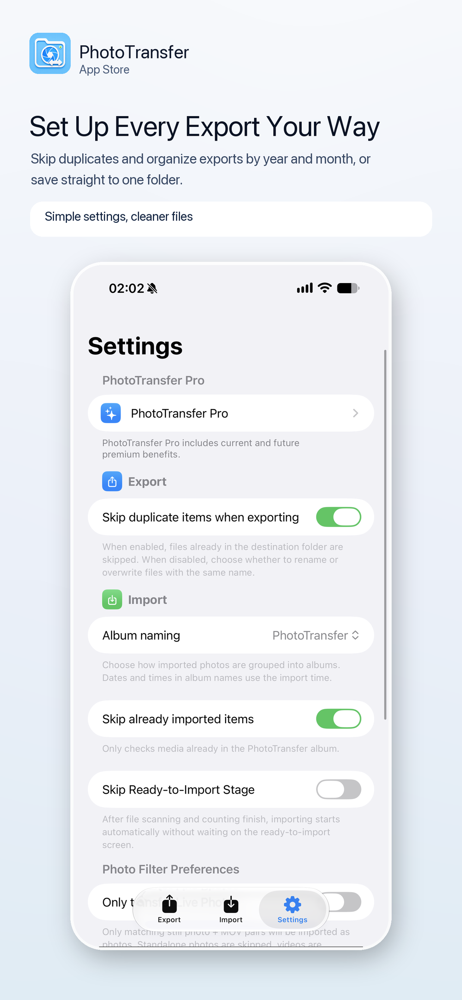

高性能相册预览
High-Performance Library Preview
为大量媒体而生的流畅照片网格，让浏览、滚动与批量选择保持轻快。
A smooth photo grid built for large libraries, so browsing, scrolling, and batch selection stay responsive.
高性能照片网格让大量媒体也能快速浏览与选择；随后可在“文件”App 与“照片”App 间导入、导出照片、视频和实况照片。
Browse thousands of library items in a smooth, responsive grid, then import or export photos, videos, and Live Photos between Files and Photos.
不需要账号，不需要上传服务器。从“文件”导入或从“照片”导出，传输进度都会清楚显示在 App、锁屏和灵动岛。
No account and no upload server. Preview your library quickly, select in batches, and keep every import or export visible from start to finish.
为大量媒体而生的流畅照片网格，让浏览、滚动与批量选择保持轻快。
A smooth photo grid built for large libraries, so browsing, scrolling, and batch selection stay responsive.
实时显示导入和导出的成功数、失败数、项目速度、传输速度，并支持实时活动。
See import and export successes, failures, item speed, transfer speed, and Live Activity updates.
导出可按年 / 月创建子目录或直接写入目标文件夹，也可跳过重复项目。
Organize exports in year / month subfolders or save directly to the destination folder, with duplicate skipping when needed.



